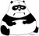

Rails Movie Night Proudly Presents:
What?
A platoon of eagles and vultures attacks the residents of a small town. Many people die. It's not known what caused the flying menace to attack. Two people manage to fight back, but will they survive Birdemic?
That's right, BIRDS! The Rails team is going to be showing Birdemic: Shock and Terror for the upcoming movie night! Get excited!
- Free pizza!
- Free beer!
- Free pizza!
When?
Tuesday, July 9th 7-9ish
OMG, free pizza and beer!
What critics are saying about Birdemic:
-

Birds don't show up until 40 minutes in!
Paul Scheer -
You want me to say it was better than Citizen Kane? Why would I say that? You can't quote me saying that.
Leonard Maltin -

Were the mics placed 50 feet from the actors?
Anonymous -
...better than Citizen Kane!
Leonard Maltin -
Never saw it.
Roger Ebert -

Why are the bottom of her feet so black?
Anonymous
What normies (like you!) had to say about it:
-
SirandPlan 9 From Outer Space? The Room? Rank amateurs compared to the brilliance of James Nguyen. This movie has everything: Exploding birds, romantic thrills, mountain lions and the most mind-blowing anti-acting you'll ever witness.
Five-stars.
-
NLM4501 "BookWorm"I had never heard of this movie until about a month or so ago when it was mentioned in a "chat room". How I missed this indi film I just can't imagine. The acting, writing, directing, special effects .... what can I say, words just can't describe any of those things.
This is one of those movies you just have to watch for yourself to believe.
Five-stars.
-
Robert P. BeveridgeI have seen many, many bad movies over the years. Many. Hundreds, perhaps thousands. And of those, there are a select few that are so indomitably awful that they transcend bad and achieve a sort of awful greatness, a train wreck effect that compels you to watch the movie over and over again, trying to make sense of it. Night of the Lepus. Beware! The Blob!. Shriek of the Mutilated. I'm sure you can come up with another dozen of your favorites. Add to that list the second half of Birdemic: Shock and Terror. I mean, when people rush into your convenience store and scream "the eagles killed my friends!", and you've been hearing reports about killer eagles on the radio all day, wouldn't you think your first reaction would be to go to the front door and remove the prop holding it open? But no, folks. That's the kind of genius that was involved in putting this mess together.
One-star.